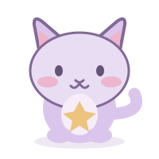

SMALL FOCUS. HAPPY FRIEND.
✦
✧

Let's do one small thing.MochiLevel 1 · Sleepy seedling
4 focus sessions to grow
Mochi is ready. No setup needed.
25:00
0 sessions todayA fresh start

Let's do one small thing.Mochi is ready. No setup needed.